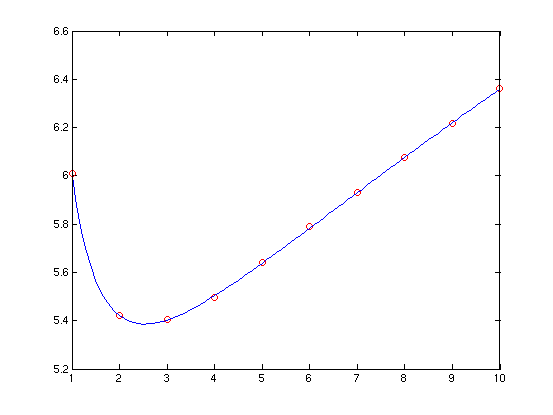

x = -2:.1:2;
y = cos(x);
p = polyfitn(x,y,'constant x^2 x^4 x^6')
polyn2sympoly(p)
polyvaln(p,[0 .5 1])
p =
ModelTerms: [4x1 double]
Coefficients: [0.99996 -0.49968 0.041242 -0.0012079]
ParameterVar: [1.2876e-10 1.084e-09 4.6603e-10 1.3903e-11]
ParameterStd: [1.1347e-05 3.2925e-05 2.1588e-05 3.7286e-06]
R2: 1
RMSE: 3.1468e-05
VarNames: {'x'}
A scalar sympoly object
0.99996 - 0.49968*x^2 + 0.041242*x^4 - 0.0012079*x^6
ans =
0.99996
0.8776
0.54031
n = 1000;
x = rand(n,2);
y = exp(sum(x,2)) + randn(n,1)/100;
p = polyfitn(x,y,3)
polyn2sympoly(p)
[xg,yg]=meshgrid(0:.05:1);
zg = polyvaln(p,[xg(:),yg(:)]);
surf(xg,yg,reshape(zg,size(xg)))
hold on
plot3(x(:,1),x(:,2),y,'o')
hold off
p =
ModelTerms: [10x2 double]
Coefficients: [0.49023 1.4327 0.0015262 1.4301 -0.006668 1.2725 0.4734 0.016563 1.2737 0.95634]
ParameterVar: [0.00038775 0.00027976 0.00094026 0.00029989 0.00059719 0.00023121 0.00038947 0.00095518 0.00024887 9.1715e-06]
ParameterStd: [0.019691 0.016726 0.030664 0.017317 0.024437 0.015205 0.019735 0.030906 0.015776 0.0030284]
R2: 0.99992
RMSE: 0.011486
VarNames: {}
A scalar sympoly object
0.49023*X1^3 + 1.4327*X1^2*X2 + 0.0015262*X1^2 + 1.4301*X1*X2^2 - 0.006668*X1*X2 + 1.2725*X1 + 0.4734*X2^3 + 0.016563*X2^2 + 1.2737*X2 + 0.95634

uv = rand(100,2);
w = sin(sum(uv,2));
p = polyfitn(uv,w,'u, v');
polyn2sympoly(p)
A scalar sympoly object
0.74014*u + 0.71238*v
x = 1:10;
y = 3 + 2./x + sqrt(x) + randn(size(x))/100;
p = polyfitn(x,y,'constant x^-1 x^0.5');
polyn2sympoly(p)
xi = 1:.1:10;
yi = polyvaln(p,xi);
plot(x,y,'ro',xi,yi,'b-')
A scalar sympoly object
3.0101 + 2.0041*x^-1 + 0.9957*x^0.5
